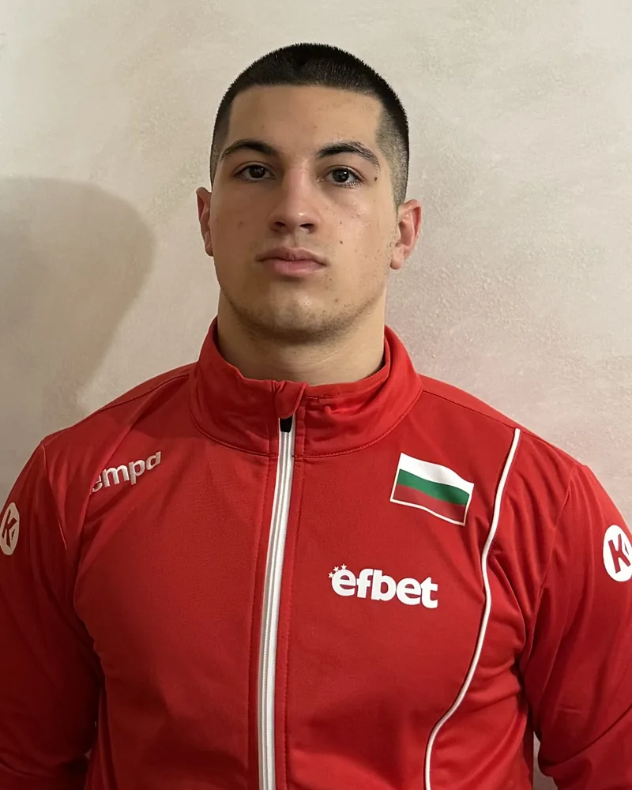

Open to internships & junior roles
SOC · Detection engineering · Cyber risk
Andon Pendichev
Cybersecurity Student
Studying at Université Sorbonne Paris Nord, with two internships in 24/7 operations behind me: one in a network operations centre, one in cybersecurity.

01 / About
Hello, I’m Andon.
- Based in
- Île-de-France, France
- Studying
- BUT Networks & Telecoms · cybersecurity track · year 3
- Languages
- Bulgarian (native), French (C2), English (C1), Spanish (A2)
- Looking for
- Internship or junior role · SOC, detection, cyber risk
I like understanding how systems really work, end to end — and then making them harder to break.
I’m in the third year of a Bachelor of Technology (BUT) in Networks & Telecommunications, cybersecurity track, at IUT de Villetaneuse — Université Sorbonne Paris Nord. My degree has taken me across the whole stack: I’ve measured optical fibre links and built radio transmitters, designed segmented networks and written web tools, and on the security side run a pentest lab and answered a security-operations tender.
Two internships in Bulgaria gave me a taste of 24/7 operations: network monitoring in A1’s NOC, then cybersecurity at BULATSA, the national air navigation service provider. I’m now looking for an internship or a junior role in SOC, detection engineering or cyber-risk management.
My CV
One page, kept up to date — in English and in French.
CV — Français
02 / Experience
Experience & education
Two internships in 24/7 operations, and a degree built around hands-on projects.
Work experience
-
Cybersecurity Intern
BULATSA — Bulgarian Air Traffic Services Authority
May – Jul 2026 · 3 months
Information Systems Directorate · Sofia, Bulgaria
- Built four SIEM log parsers (NetWitness) for sources the SOC could not search yet — now in production.
- Took part in daily SOC monitoring: WAF alert triage, detection of authentication abuse and incident write-ups.
- Supported vulnerability management and a security-policy review (ISO/IEC 27005, NIS2), and prototyped a risk-prioritisation tool in Python.
Rated “outstanding” by my internship supervisor
- SIEM
- NetWitness
- WAF
- ISO/IEC 27005
- NIS2
-
Network Operations Center (NOC) Intern
A1 Group
2025 · 3 months
IP, Transport & Fixed Access network monitoring · Sofia, Bulgaria
- Monitored fixed and IP networks in real time (transport links, customer access lines) in a 24/7 NOC, with alarm-correlation tools.
- Analysed incidents (latency, packet loss, error rates) and helped prioritise tickets by customer impact and SLAs.
- Helped troubleshoot links and configurations, escalated to field and engineering teams and followed up until service was restored.
- Network monitoring
- Alarm correlation
- Incident management
- SLA
03 / Projects
Selected work
Twelve projects from my degree — the “SAÉ”, the graded hands-on team projects of the French BUT — and two from my internship. Each card opens the original deliverable.
-
Discovering penetration testing
Educational pentest in an isolated lab: reconnaissance, Nessus vulnerability scanning and controlled Metasploit exploitation of Metasploitable 2 and Windows XP targets, wrapped up in a report with risk analysis and remediation advice.
- Kali Linux
- Nessus
- Metasploit
- Reporting
-
Security maintenance & support: answering a public tender
Technical proposal for tender MP 24-16 of the Agence de Services et de Paiement: team organisation and skills matrix, 24/7 monitoring, N1–N3 incident handling and SLA commitments for a security maintenance mission.
- Security maintenance
- 24/7 monitoring
- Incident response
- SLA
-
Long-distance optical transmission system
A 10 km fibre-optic ring carrying 1 Gbit/s on four CWDM wavelengths, with optical add/drop multiplexers (OADM) and SFP lasers — optical budget calculated and OSNR measured above 40 dB.
- Fibre optics
- CWDM
- OADM
- OSNR
-
SIEM log parsers for an air-navigation SOC
Four custom NetWitness parsers — reverse proxy, identity provider, web application firewall and NetFlow — that made unparsed production logs searchable and correlated. Now in production at BULATSA.
- NetWitness
- XML
- Regex
- SIEM
Confidential — details on request
-
WARS — a risk-based prioritisation prototype
Python prototype that ranks exposed web assets by contextual risk — CVSS, EPSS, CISA KEV and asset criticality — with an LLM used only to classify assets, so every score stays auditable.
- Python
- LangGraph
- EPSS
- CISA KEV
Confidential — details on request
-
JurisNova: a segmented, secured law-firm network
Network for a two-floor law firm: VLANs for staff, a web DMZ, a database DMZ and an isolated guest Wi-Fi, pfSense firewall and ACLs, Apache, GLPI and MariaDB services — plus SLA and budget.
- VLAN
- DMZ
- pfSense
- GLPI
-
IP address management platform for an ISP
Web tool that automates public IP assignment to an ISP’s customers: database design, PHP interface, automatic subnetting (VLAN, VRF) and generation of device configuration files, with input validation and SQL error handling.
- PHP
- MySQL
- IPAM
- Automation
-
AM/FM and walkie-talkie transmitters
Built two radio products to a client brief — an AM/FM broadcast transmitter and a walkie-talkie transmitter — and validated them with time-domain and spectral measurements.
- AM/FM
- RF
- Oscilloscope
- Spectrum analysis
-
Two-site network for a small company
Designed and deployed the network of a company with sites in Lyon and Grenoble, in roles mirroring a real IT team: addressing plan, DNS, HTTP, NAT/PAT, ACLs and SSH hardening, tested with Wireshark.
- Cisco IOS
- NAT/PAT
- ACL
- GNS3
- Wireshark
-
Cultural companies across French regions
Processed a public dataset on cultural companies in French regions (2017–2018) and published it as a web page with tables and interactive Chart.js charts.
- CSV
- HTML / CSS
- Chart.js
-
My first web presence
The first version of this portfolio, hand-coded in HTML, CSS and JavaScript with a French/English switch — rebuilt from scratch in 2026 into the site you’re reading.
- HTML
- CSS
- JavaScript
-
A 4-bit microprocessor on Arduino
Discovering a transmission device: coded a 4-bit microprocessor on Arduino (register bank, accumulator, ALU, 2:1 multiplexer) running four instructions, driven from a phone over Wi-Fi with the result shown on LEDs.
- Arduino
- C++
- Digital logic
- IoT
-
First steps in computer networks
Configured Linux hosts and a router in the Marionnet emulator — IP addressing, interfaces, static and default routes — then tested and troubleshot connectivity.
- Linux
- iproute2
- Routing
- Marionnet
-
Two-factor authentication awareness video
Awareness video for a non-technical audience on why and how to protect accounts with two-factor authentication (2FA).
- 2FA
- Awareness
- Video
04 / Skills
Toolbox
Grouped the way I use them — from reading a packet to defending a risk decision.
SOC & detection
Turning logs into searchable, correlated evidence.
- NetWitness SIEM
- XML log parsers
- Unified Data Model
- Alert triage
- Multi-source correlation
- Regex
- Syslog
- JSON
- CEF
- NetFlow
- Imperva WAF
- Keycloak (OIDC)
- MITRE ATT&CK
GRC & cyber risk
Frameworks to decide what matters — and to prove it.
- ISO/IEC 27001
- ISO/IEC 27005
- NIS2
- NIST CSF 2.0
- CIA triad
- CVE
- CVSS
- NVD
- EPSS
- CISA KEV
- TLP 2.0
Offensive security
Understanding attacks to prioritise defences.
- Kali Linux
- Nessus
- Metasploit
- Metasploitable
- Exploitation
- Pentest reporting
Networking
The foundations of everything I monitor.
- TCP/IP
- HTTP · DNS · SSH · FTP
- Cisco IOS
- Routing & switching
- VLAN
- DMZ
- Firewalls
- OpenVPN
- GNS3
- Packet Tracer
- Wireless
- VoIP / SIP
- Fibre optics (WDM, OTDR)
Systems
Running the machines behind the services.
- Linux
- Windows
- Active Directory
- DNS
- DHCP
- VMware
- VirtualBox
Development & AI
Automating analysis — with AI only where it belongs.
- Python
- asyncio
- httpx
- Playwright
- BeautifulSoup
- Pydantic
- TCP/UDP sockets
- LangGraph
- LLM APIs
- Bash
- SQL / MySQL
- PHP
- HTML / CSS / JS
- Git
Languages
- BulgarianNative
- FrenchC2
- EnglishC1
- SpanishA2
How I work
- Attention to detail
- Autonomy
- Teamwork
- Analytical thinking
- Technical curiosity
- Fast learning
05 / Contact
Let’s talk.
I’m looking for an internship or a junior role in SOC, detection engineering or cyber-risk management. Email is the best way to reach me.
- Phone+33 7 66 67 92 38
- LinkedInin/andon-pendichev
- LocationÎle-de-France, France